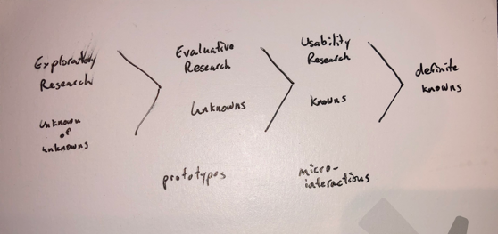
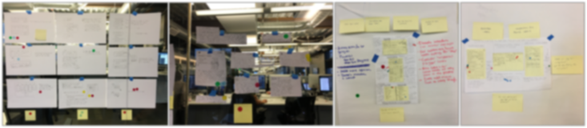
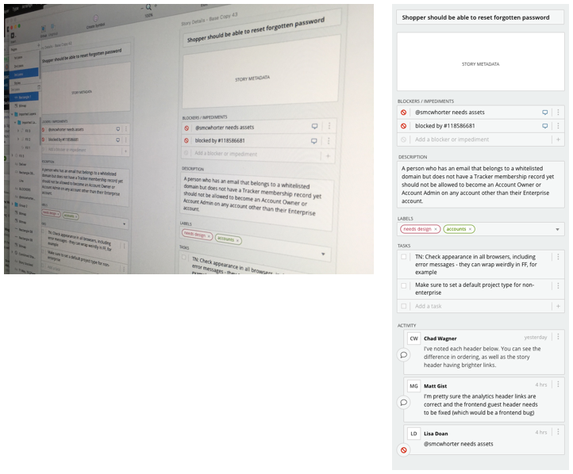

Blocked Stories 2017
The Problem
Teams needed a way to easily identify bottlenecks in the development process that preventied them from working on the stories and delivering them. This was decreasing the amount of user value that was being delivered to their customers in any given iteration of work.
To better understand all the nuances and pain points users were experiencing, we did a deep research dive supplement the cursory research done during the Workflow initiative that focused on breadth of different collaboration challenges teams were experiencing.
The Process
To supplement our initial workflow research that gave us a wide array of problem statements, we conducted 7 additional interviews. These consisted of a diverse user group including internal and external users of varying team and company sizes.
In this exploratory research phase, we wanted to understand the problems more deeply. Questions and observations we had going into this phase included:
- Understanding the differences between the customer pain points
- Lots of teams requested dependencies or blockers, but what they actually needed to do were very different
- What problems were not something we should solve through blockers, but through other methods later?
- Difference between blockers and dependencies?
- Was it necessary to support cross-team and cross-project dependencies?
- What is Pivotal and Tracker's views on dependencies, workflow and blockages, from a philosophical standpoint? Tracker has always been an opinionated tool meant to help lead teams to better practices.
On completion of the exploratory phase, a cross-functional design sprint was held to come up with different possible solutions, leveraging the expertise we had across different roles. Three different solutions were selected to be fleshed out further and evaluated in user testing.
During the evaluative phase, different solutions were iterated on. This phase allowed me to dive deeper into feasibility and uncover things we may not have considered during the initial design sprint.
We then chose the solution we believed to have the most potential and created clickthrough mockups and a script to test with our users. During this phase, we verified that the solution solved user needs well and uncovered some usability challenges.
The engineering team began implementing the feature with my assistance for beta release and feedback while I iterated on improving the interaction and visual designs for this feature based on user testing feedback.
Shortly after, the MVP was released with extremely positive feedback! We continued to iterate on Blockers and roll out additional improvements, some of which we had already put on our roadmap and some of which were improvements based on additional user feedback upon release.
